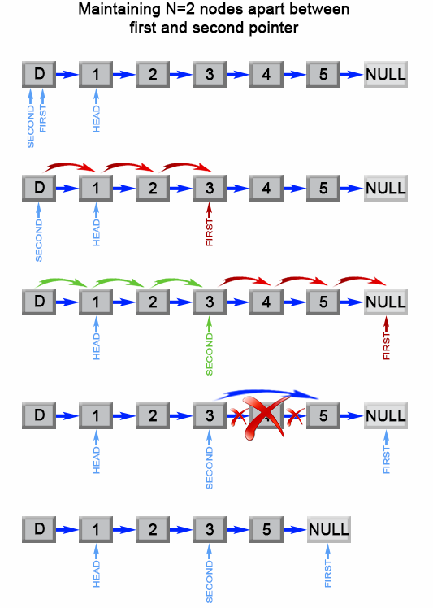

Given a linked list, remove the n-th node from the end of list and return its head.
Example:
Given linked list: 1->2->3->4->5, and n = 2. After removing the second node from the end, the linked list becomes 1->2->3->5.
Note:
Given n will always be valid.
Follow up:
Could you do this in one pass?
解题分析
快慢指针

1
2
3
4
5
6
7
8
9
10
11
12
13
14
15
16
17
18
19
20
21
22
23
24
25
26
27
28
29
30
31
32
33
34
35
36
37
38
39
40
41
42
43
44
45
46
47
48
49
50
51
52
53
54
55
56
57
58
59
60
61
62
63
64
65
66
67
68
69
70
71
72
73
74
75
76
77
78
79
80
81
82
83
84
85
package com.diguage.algorithm.leetcode;
import com.diguage.algorithm.util.ListNode;
import java.util.Arrays;
import java.util.Objects;
import static com.diguage.algorithm.util.ListNodeUtils.build;
import static com.diguage.algorithm.util.ListNodeUtils.printListNode;
/**
* = 19. Remove Nth Node From End of List
*
* https://leetcode.com/problems/remove-nth-node-from-end-of-list/[Remove Nth Node From End of List - LeetCode]
*
* Given a linked list, remove the n-th node from the end of list and return its head.
*
* .Example 1:
* [source]
* ----
* Given linked list: 1->2->3->4->5, and n = 2.
*
* After removing the second node from the end, the linked list becomes 1->2->3->5.
* ----
*
* *Note:*
*
* Given n will always be valid.
*
* @author D瓜哥, https://www.diguage.com/
* @since 2019-07-26 20:17
*/
public class _0019_RemoveNthNodeFromEndOfList {
/**
* Runtime: 0 ms, faster than 100.00% of Java online submissions for Remove Nth Node From End of List.
*
* Memory Usage: 34.6 MB, less than 100.00% of Java online submissions for Remove Nth Node From End of List.
*/
public ListNode removeNthFromEnd(ListNode head, int n) {
if (Objects.isNull(head) || n == 0) {
return head;
}
ListNode p1 = head;
int length = 1;
while (Objects.nonNull(p1.next) && length <= n) {
p1 = p1.next;
length++;
}
if (Objects.isNull(p1.next) && length == n) {
return head.next;
}
if (Objects.isNull(p1.next) && length < n) {
return head;
}
ListNode p2 = head;
while (Objects.nonNull(p1.next)) {
p1 = p1.next;
p2 = p2.next;
}
if (Objects.nonNull(p2.next)) {
p2.next = p2.next.next;
}
return head;
}
public static void main(String[] args) {
_0019_RemoveNthNodeFromEndOfList solution = new _0019_RemoveNthNodeFromEndOfList();
ListNode r5 = solution.removeNthFromEnd(build(Arrays.asList(1, 2)), 1);
printListNode(r5);
ListNode r4 = solution.removeNthFromEnd(build(Arrays.asList(1)), 1);
printListNode(r4);
ListNode r1 = solution.removeNthFromEnd(build(Arrays.asList(1, 2, 3, 4, 5)), 2);
printListNode(r1);
ListNode r2 = solution.removeNthFromEnd(build(Arrays.asList(1, 2, 3, 4, 5)), 6);
printListNode(r2);
ListNode r3 = solution.removeNthFromEnd(build(Arrays.asList()), 2);
printListNode(r3);
}
}